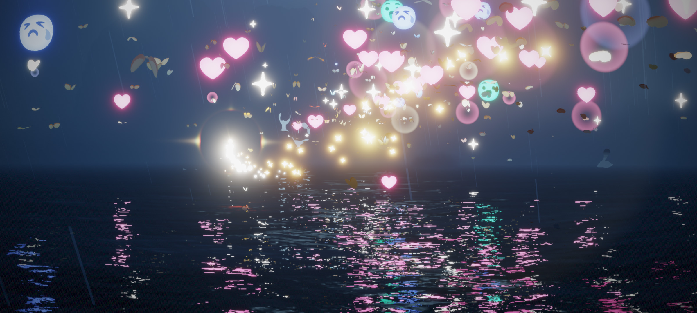

演唱會
我搶到了搖滾區!
第一場演唱會，好多玩家聚集在一起，大家都在位置上等待正式表演，我還去搶了一個離舞台最近的搖滾區，有看到台上小小的人嗎，那就是歐若拉的形象!!整場演唱會裡，大家都可以透過表情符號來傳達心情，剛開始是愛心，後來演唱會結束全部都變成哭臉了，大家都捨不得走。
♠ ♥ ♦ ♣ ♠ ♥ ♦ ♣ ♠ ♥ ♦ ♣ ♠ ♥ ♦ ♣ ♠ ♥ ♦ ♣ ♠ ♥ ♦ ♣ ♠ ♥ ♦ ♣ ♠ ♥ ♦ ♣ ♠ ♥ ♦ ♣ ♠ ♥ ♦ ♣ ♠ ♥ ♦ ♣ ♠ ♥ ♦ ♣ ♠ ♥ ♦ ♣ ♠ ♥ ♦ ♣ ♠
▼ ▼ ▼ ▼ ▼ ▼ ▼ ▼ ▼ ▼ ▼ ▼ ▼ ▼ ▼ ▼ ▼ ▼ ▼ ▼ ▼ ▼ ▼ ▼ ▼ ▼ ▼ ▼ ▼ ▼ ▼ ▼ ▼ ▼ ▼ ▼ ▼ ▼ ▼ ▼ ▼ ▼ ▼
